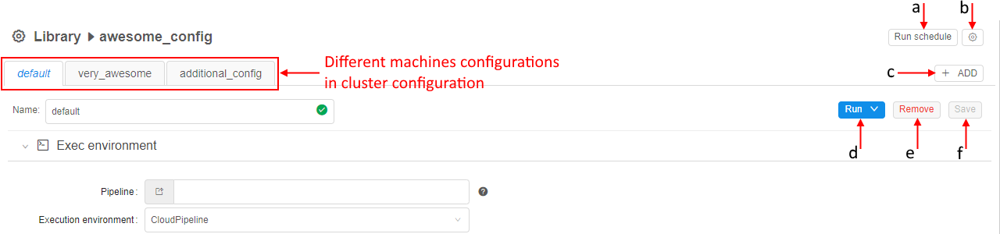

7. Manage Detached configuration
Detached configuration is a run configuration or a set of run configurations that allows running tools and pipelines.
Note: In comparison with pipeline configurations, detached configurations do not require a pipeline.
"Details" view pane

At the "Details view" pane you can find:
| Section | Control | Description |
|---|---|---|
| Name | Detach configuration (a) and its Run configuration (b) names | |
| Estimated price per hour | Control shows machine hours prices. If you navigate mouse to "info" icon (c), you'll see the maximum, minimum and average price for a particular pipeline version run as well as the price per hour. | |
| Exec environment | This section lists execution environment parameters. | |
| Pipeline (d) | A name of the pipeline to be executed (optional). Click on the field to select a pipeline in the pop-up. | |
| Execution environment (e) | An environment platform for execution the pipeline. Click for select from the list. | |
| Docker image (f) | A name of a Docker image to use for a pipeline execution (e.g. "base-generic-centos7"). Click on the field to select an image in the pop-up. | |
| Node type (g) | An instance type in terms of Cloud Provider with specifying amounts of CPU, RAM and GPU (e.g. 4 CPU cores, 16 Gb RAM and 0 GPU cores). | |
| Disk (h) | Size of a disk, that will be attached to the instance in Gb. | |
| Configure cluster button (i) | By clicking on this button you can configure cluster or auto-scaled cluster. Cluster is a collection of instances which are connected so that they can be used together on a task. See here and here for more information. |
|
| Cloud Region (j) | A specific region for a compute node placement. Please note, if a non-default region is selected - certain CP features may be unavailable:
Note: if a specific platform deployment has a number of Cloud Providers registered (e.g. |
|
| Total resources (q) | Information about total resources that will be used for running pipeline with specified parameters (depends on node type and cluster configuration). See here for more details. | |
| Advanced | ||
| Price type (k) | Choose spot or on-demand type of instance. The "Info" icon can give you additional information, which helps you to make choice. | |
| Timeout (min) (l) | After this time pipeline will shut down (optional). Before the shut down, all the contents of the $ANALYSIS_DIR directory will be copied to output storages. |
|
| Limit mounts (m) | Restricts available storages for the tools or pipelines. See here. | |
| Cmd template (n) | A shell command that will be executed on the running node. | |
| "Start idle" | The flag sets Cmd template to "sleep infinity". For more information about starting a job in this mode refer to 15. Interactive services. | |
| Parameters | This section lists pipeline specific parameters that can be used during a pipeline run. Pipeline parameters can be assigned the following types (p):
|
|
| Add parameter (o) | This control helps to add an additional parameter to a configuration. | |
| Root entity type | Note: This parameter is only available for configurations that are stored in Project type of the Folder and the Project has to store metadata object(s) within. See 7.1. Create and customize Detached configuration. It defines an entity which metadata will be used to process data. Default values: Participants, Samples, Pairs, Sets of Participants, Sets of Samples, Sets of Pairs. |


Controls
There are buttons at the top of the "Details" view:

Run schedule
Allows creating of schedule rules to launch runs from the default configuration in the scheduled day and time in automatic regimen (a). See 7.2. Launch Detached Configuration.
"Gear" icon
Allows changing a name, description of the configuration and permissions for it (b). See 7.1. Create and customize Detached configuration.
Add
Allows adding machine configuration (c). See 7.1. Create and customize Detached configuration.
Run
Allows launching one machine or all machines as a cluster (d). See 7.2. Launch Detached Configuration.
Remove
Allows removing machine configuration (e). See 7.4. Remove Detached configuration.
Save
Allow saving machine configuration (f). See 7.1. Create and customize Detached configuration.